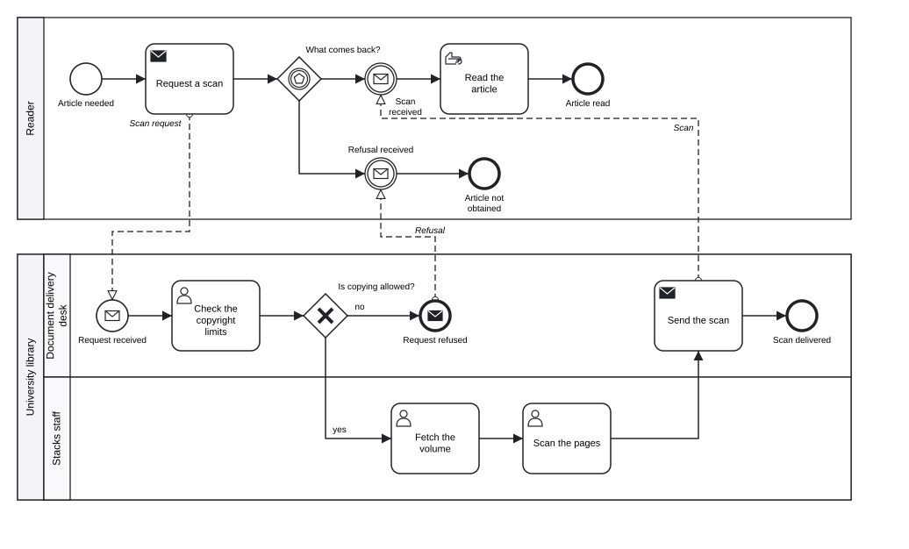
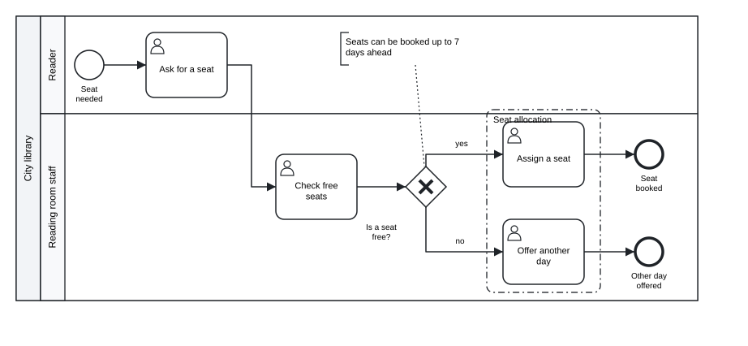
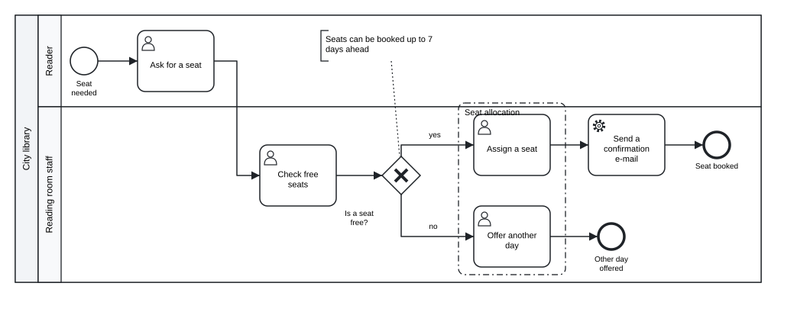

Chapter 8 Layout, export and import
In this chapter you will draw a model with the automatic layout of tok · write BPMN 2.0 XML with and without diagram information, SVG pictures and the complete set of files of a model · open the exported files in Camunda Modeler and bpmn.io · import BPMN and DMN files drawn in other tools and read what the import reports · keep the drawing of an imported model in the layout sidecar and change the model without losing it · keep models and sidecars in version control
A tok document contains no coordinates. It says that “Check the copyright limits” comes after “Request received”, not that it stands 120 units to the right of it. This is a deliberate choice: the text is the model, and every picture and every file is a projection of it, produced by the tools. A model that has no coordinates cannot have a crooked line, an overlapping label or a shape that someone forgot to move. Two people who change the same model do not fight over the positions of boxes. And an AI agent that writes a model does not have to compute a drawing.
The other side of the choice is that tok has to draw the model itself, and that a drawing made in a graphical editor has to be kept somewhere when such a model comes into tok. This chapter covers both directions.
8.1 The automatic layout
Every command that produces a picture or a BPMN file computes a layout from the structure of the model:
- The process flows from left to right. Each element is placed in a column after the elements before it, and parallel branches take separate rows.
- Pools are stacked from top to bottom in the order of the document, and lanes inside a pool likewise; a black-box pool is drawn as a band without content.
- A sub-process is drawn expanded, with its content inside its border; an event sub-process inside its parent, with a dotted border.
- Boundary events sit on the lower border of their activity. Their paths leave downwards.
- Data objects and data stores are placed below the activities that read or write them; process inputs below the start of the process.
- Message flows are dashed lines between pools, routed through the gaps between the pools, with the name of the message.
- Text annotations are placed near the element they explain.
The layout is deterministic: the same document always gives the same drawing, so a picture in a report can be produced again at any time. The layout does not draw groups, because their members do not form a rectangle in general; a group gets its shape from a layout sidecar (below).
The following model of a document delivery service is drawn entirely by the automatic layout.
tok 1.0 "Document delivery"
pool reader "Reader"
start need "Article needed"
send request "Request a scan" message="Scan request"
eventgw reply "What comes back?"
catch scan "Scan received" message="Scan"
catch refusal "Refusal received" message="Refusal"
manual read "Read the article"
end done "Article read"
end gave-up "Article not obtained"
pool library "University library"
lane desk "Document delivery desk"
start received "Request received" message="Scan request"
user check "Check the copyright limits"
xor allowed "Is copying allowed?"
send deliver "Send the scan" message="Scan"
end delivered "Scan delivered"
end refused "Request refused" message="Refusal"
lane stacks "Stacks staff"
user fetch "Fetch the volume"
user digitise "Scan the pages"
flow need -> request -> reply
flow reply -> scan
flow reply -> refusal
flow scan -> read -> done
flow refusal -> gave-up
flow received -> check -> allowed
flow allowed -> fetch "yes"
flow allowed -> refused "no"
flow fetch -> digitise -> deliver -> delivered
message request -> received "Scan request"
message deliver -> scan "Scan"
message refused -> refusal "Refusal"
Figure 8.1: The automatic layout: two pools, two lanes, an event-based gateway and three message flows.
Download the model (.tok) Download the BPMN export (.bpmn)
If you do not like how the automatic layout draws a model, the first thing to change is usually the model. The order of the statements can change the order of parallel rows; a long chain of elements in one lane may be clearer split into a sub-process; a path that crosses the whole diagram may be shorter with a pair of link events (Chapter 5).
8.2 Pictures: tok svg
tok svg FILE writes a picture of the diagram as SVG, a vector format that every web browser shows and every word processor and presentation program can insert. Without -o the picture is written next to the model, with the same name:
tok svg 08-document-delivery.tok
SVG: 08-document-delivery.svg-o OUT.svg (or --output) names the file. The picture uses the symbols of BPMN 2.0, as Appendix A shows them. Every diagram in this book was made with tok svg.
A model with errors has no picture: tok svg prints the diagnostics and exits with code 1. Warnings do not prevent the picture.
8.3 BPMN files: tok bpmn
tok bpmn FILE writes the model as BPMN 2.0 XML, with a diagram (the BPMN DI part of the file) computed by the automatic layout:
tok bpmn 08-document-delivery.tok
BPMN: 08-document-delivery.bpmnThe file begins like this:
<?xml version="1.0" encoding="UTF-8"?>
<bpmn:definitions xmlns:bpmn="http://www.omg.org/spec/BPMN/20100524/MODEL" ... id="definitions" name="Document delivery" targetNamespace="http://bpmn.io/schema/bpmn" exporter="tok" exporterVersion="1.0">
<bpmn:message id="Message_Scan_request" name="Scan request" />
<bpmn:message id="Message_Scan" name="Scan" />
<bpmn:message id="Message_Refusal" name="Refusal" />
<bpmn:collaboration id="collaboration">
<bpmn:participant id="reader" name="Reader" processRef="reader-process" />
<bpmn:participant id="library" name="University library" processRef="library-process" />
<bpmn:messageFlow id="m-request-received" name="Scan request" sourceRef="request" targetRef="received" messageRef="Message_Scan_request" />
...A few things are worth knowing about this file:
- The identifiers of the elements are the identifiers of the document. A pool
readeris the participantreaderand its processreader-process(or the identifier given withprocess=). Sequence flows get the identifiersf-SOURCE-TARGET, message flowsm-SOURCE-TARGET, unlessid=gives another. Because the identifiers are stable, a process engine, a report or a mining tool can refer to an element by the same name across versions of the model. - Messages, signals, errors and escalations, which tok declares implicitly by name, are written as separate declarations, as BPMN requires.
exporterVersionis the language version of the document, here1.0.- In a document marked
executable, the file carries the extension attributes of Camunda 8 (Chapter 10).
--no-layout writes the semantic model only, without the diagram. Such a file is smaller and is what a process engine or an analysis tool needs; most modelling tools draw a file without a diagram poorly or not at all, so keep the layout for files that people will open.
8.4 Everything at once: tok export
tok export FILE writes every file the model produces: the BPMN file, its SVG picture, the decision files (Chapter 9) and one Camunda form file per form (Chapter 10). -o FOLDER names the output folder; without it, the files go next to the model. The command lists what it wrote:
tok export 09-purchase-approval.tok -o out
out\09-purchase-approval.bpmn
out\09-purchase-approval.svg
out\approval-mode.dmn
out\approval-mode.drd.svg(The paths are printed with the separator of your system; this listing comes from Windows.) The process of Chapter 9 gives four files: the BPMN process, its picture, the DMN file of its decision model and the picture of the decision requirements diagram. A document of language 1.0 that has only decisions writes only the DMN files and their pictures.
| Command | Writes |
|---|---|
tok svg FILE [-o OUT.svg] |
the picture |
tok bpmn FILE [-o OUT.bpmn] [--no-layout] |
the BPMN file, with or without diagram |
tok export FILE [-o FOLDER] |
BPMN, SVG, DMN files with their pictures, form files |
All three read the layout sidecar of the document when there is one, and accept --no-sidecar to ignore it. All three refuse a document with errors.
8.5 Opening the files in BPMN tools
The BPMN files of tok open in the common BPMN tools. Two are worth knowing:
- bpmn.io is the open-source modeller in the browser, at https://demo.bpmn.io. Drag the
.bpmnfile onto the page. It is the quickest way to show a model to someone who has no tools installed. - Camunda Modeler is the desktop application built on bpmn.io, with the properties panels of Camunda 8. Open the
.bpmnfile with File → Open File; the.dmnand.formfiles written bytok exportopen the same way.
Both show the diagram computed by tok and let you inspect every element: its identifier, its name, its documentation (doc=), and in Camunda Modeler the execution properties of an executable model. You can also edit the model there. If you do, the drawing is the tool’s and the text is not updated: to bring the change back into the tok document, import the edited file (next section). Decide in a team which side is the source of a model. Most teams that use tok keep the text as the source and use the graphical tools to show and to inspect.
8.6 Importing BPMN files
tok import FILE.bpmn reads a BPMN 2.0 XML file and prints the same model as tok text. It is the way to bring existing models into tok: a collection of diagrams drawn over the years in Camunda Modeler, a model received from a consultant, a reference model of a standard.
Suppose a colleague has drawn the booking of a reading room seat in a graphical editor and sent you the file 08-drawn-elsewhere.bpmn (Download the drawn file (.bpmn)). Without -o, the text is printed on the standard output and the import’s remarks on the standard error:
tok import 08-drawn-elsewhere.bpmn
08-drawn-elsewhere.bpmn: Group_0alloc7: group membership is not stored in BPMN; add members="…" by hand
08-drawn-elsewhere.bpmn: Activity_1check3: attribute {http://camunda.org/schema/1.0/bpmn}assignee was skipped
tok 0.1 "Booking a reading room seat" id=Definitions_0r7k2m1 collaboration=Collaboration_1x4d9qa
pool Participant_0lib8rr "City library" process=Process_1seat42
lane Lane_0reader1 "Reader"
start Event_0asked1 "Seat needed"
user Activity_0ask1ab "Ask for a seat"
lane Lane_1staff22 "Reading room staff"
user Activity_1check3 "Check free seats"
xor Gateway_0free5k "Is a seat free?"
user Activity_0assign "Assign a seat"
user Activity_1offer9 "Offer another day"
end Event_1booked7 "Seat booked"
end Event_0other88 "Other day offered"
flow Event_0asked1 -> Activity_0ask1ab id=Flow_0s1t2a3
flow Activity_0ask1ab -> Activity_1check3 id=Flow_1a2b3c4
flow Activity_1check3 -> Gateway_0free5k id=Flow_0c4d5e6
flow Gateway_0free5k -> Activity_0assign "yes" id=Flow_1yes123
flow Gateway_0free5k -> Activity_1offer9 "no" id=Flow_0no4567
flow Activity_0assign -> Event_1booked7 id=Flow_1e2n3d4
flow Activity_1offer9 -> Event_0other88 id=Flow_0o9t8h7
note TextAnnotation_0note1x "Seats can be booked up to 7 days ahead" on=Gateway_0free5k
group Group_0alloc7 "Seat allocation"8.6.1 What is kept
The import keeps the structure of the model, the names, the documentation and the identifiers. Identifiers matter beyond tok: under them the model may already be known to a process engine, a report or another system. Graphical editors generate identifiers such as Activity_0ask1ab, and the import keeps them as they are. An identifier that is not a valid tok identifier (with spaces or non-ASCII letters, or starting with a digit) is converted, every reference to it is rewritten, and each conversion is reported.
The header carries what tok needs to write the same file back: id= and collaboration= give the identifiers of the definitions and collaboration elements when they differ from the defaults, and the pool keeps the identifier of its process with process=. The import writes the oldest language version that expresses what it read: tok 0.1 for this model, 0.3 for a model with Camunda execution attributes, 0.5 or 0.6 for the elements added in those versions. Each of these headers is a valid document of every release 1.x with the same meaning; change the header to tok 1.0 when you start to extend the model.
A sequence flow keeps its identifier with id= when it differs from the identifier tok would derive. Drawn models usually have identifiers like Flow_0s1t2a3, so every flow gets its own line. --no-flow-ids drops these identifiers, and the flows print as compact chains:
flow Event_0asked1 -> Activity_0ask1ab -> Activity_1check3 -> Gateway_0free5k
flow Gateway_0free5k -> Activity_0assign "yes"
flow Gateway_0free5k -> Activity_1offer9 "no"
flow Activity_0assign -> Event_1booked7
flow Activity_1offer9 -> Event_0other88Use it when nothing outside the model refers to the flows. Default flows are kept either way, because tok records them with the flag default.
8.6.2 What is reported
Everything the import does not keep is reported: each element, attribute, extension or piece of documentation that tok cannot express is named on the standard error, an extension attribute of another tool once per document. In the example, the group lost its members (BPMN does not store them) and an attribute of Camunda 7 was skipped. Other things commonly reported are:
| Reported | Why |
|---|---|
| extension elements and attributes of other tools (Camunda 7, Signavio, Trisotech, …) | tok keeps only the extensions of Camunda 8 |
isImmediate, implementation, startQuantity, completionQuantity and other attributes without a tok equivalent |
they have no tok attribute |
documentation of elements that have no doc= in tok, further documentation elements, formats other than plain text |
tok keeps one plain text per element |
| lanes inside a sub-process | the nodes stay in the sub-process |
| messages, signals, errors and data stores that no element uses | tok declares them through their use |
| line breaks in names | a label is one line; they become spaces |
Read the report: it tells you exactly what the text does not contain. Then run tok check on the result. An imported model may break rules that its editor did not enforce (a node in a pool with lanes but in no lane is kept in the pool and reported by tok check as R030), and the check is the moment to correct them.
The import reads a file with several collaborations by merging them into one, takes a process that no participant references into a new pool, and refuses files nested more than 64 levels deep, far beyond what modelling tools write.
8.7 The layout sidecar
With -o, the import writes the text into a file and the drawing of the original file into a second file next to it, the layout sidecar FILE.tok.layout:
tok import 08-drawn-elsewhere.bpmn -o 08-imported.tok --no-flow-ids
08-drawn-elsewhere.bpmn: Group_0alloc7: group membership is not stored in BPMN; add members="…" by hand
08-drawn-elsewhere.bpmn: Activity_1check3: attribute {http://camunda.org/schema/1.0/bpmn}assignee was skipped
tok: 08-imported.tok
layout: 08-imported.tok.layoutThe sidecar is a plain text file. Its first line is tok-layout 1; each further line names an element by its tok identifier and gives its geometry in the units of the BPMN file:
tok-layout 1
Participant_0lib8rr 160 80 840 350
Lane_0reader1 190 80 810 120
Lane_1staff22 190 200 810 230
Event_0asked1 232 122 36 36
Event_0asked1/label 220 165 60 14
Activity_0ask1ab 320 100 100 80
...
Group_0alloc7 740 195 140 225
f-Event_0asked1-Activity_0ask1ab 268 140 320 140
f-Activity_0ask1ab-Activity_1check3 420 140 450 140 450 290 480 290
...| Line | Meaning |
|---|---|
ID x y w h |
the bounds of a shape: position of the upper left corner, width, height |
ID x1 y1 x2 y2 … |
the waypoints of an edge (a flow or an association) |
ID/label x y w h |
the bounds of the label of a shape or an edge |
Empty lines and lines starting with # are ignored. The flows in this sidecar are named by the identifiers tok derives (f-SOURCE-TARGET), because the import dropped the original identifiers; elements without an identifier of their own, such as the associations of notes, are matched by what they connect.
tok bpmn, tok svg and tok export read the sidecar when it exists next to the document, and draw the model as it was drawn:

Figure 8.2: The imported model drawn with its layout sidecar: the geometry of the original drawing, including the group.
Download the model (.tok) Download the BPMN export (.bpmn)
The sidecar never changes the meaning of the model. Deleting it gives the automatic layout again; --no-sidecar ignores it for one command; tok import --no-layout does not write it at all.
8.7.1 Changing a model that has a sidecar
The point of the sidecar is that the text can be changed while the drawing stays. When the model changes:
- a shape whose identifier is still in the model keeps its bounds and its label;
- an edge keeps its waypoints when both of its ends kept their geometry and it still touches them; other edges are routed again;
- a new shape is placed next to a neighbour that kept its place, at the distance the automatic layout would use, moved aside from other shapes; pools, lanes and sub-processes grow to hold the new content;
- lines of the sidecar that name elements no longer in the model are ignored.
Suppose the library adds a confirmation e-mail after a seat is assigned, and records which elements the group contains:
tok 0.1 "Booking a reading room seat" id=Definitions_0r7k2m1 collaboration=Collaboration_1x4d9qa
pool Participant_0lib8rr "City library" process=Process_1seat42
lane Lane_0reader1 "Reader"
start Event_0asked1 "Seat needed"
user Activity_0ask1ab "Ask for a seat"
lane Lane_1staff22 "Reading room staff"
user Activity_1check3 "Check free seats"
xor Gateway_0free5k "Is a seat free?"
user Activity_0assign "Assign a seat"
service confirm "Send a confirmation e-mail"
user Activity_1offer9 "Offer another day"
end Event_1booked7 "Seat booked"
end Event_0other88 "Other day offered"
flow Event_0asked1 -> Activity_0ask1ab -> Activity_1check3 -> Gateway_0free5k
flow Gateway_0free5k -> Activity_0assign "yes"
flow Gateway_0free5k -> Activity_1offer9 "no"
flow Activity_0assign -> confirm -> Event_1booked7
flow Activity_1offer9 -> Event_0other88
note TextAnnotation_0note1x "Seats can be booked up to 7 days ahead" on=Gateway_0free5k
group Group_0alloc7 "Seat allocation" members="Activity_0assign Activity_1offer9"If the sidecar is copied unchanged, the end event “Seat booked” keeps its place, and the new task is placed next to it, beyond the end event: the drawing is valid but awkward, because the new step belongs before the end. The remedy is to delete the lines of the end event from the sidecar (Event_1booked7 and Event_1booked7/label). Without a geometry of its own, the end event is placed anew, after the new task:

Figure 8.3: The imported model with a new task. The end event was removed from the sidecar and placed again; every other shape keeps the geometry of the original drawing.
Download the model (.tok) Download the BPMN export (.bpmn)
This is the general technique: the sidecar is text, and deleting a line hands one element back to the automatic layout. Deleting the whole file hands back the whole diagram.
8.7.2 The round trip
Import is the inverse of export. A document written by tok survives the round trip tok → BPMN → tok unchanged, apart from the header version, which the import sets to the oldest version that expresses the model:
tok bpmn 08-document-delivery.tok
tok import 08-document-delivery.bpmn -o back.tokback.tok is the text of 08-document-delivery.tok with the header tok 0.1 "Document delivery". A model from another tool keeps its structure, names, identifiers and documentation, and everything else is reported.
The evidence for this promise is public. The BPMN Model Interchange Working Group (MIWG) of the OMG maintains a set of reference models that BPMN tools use to test their import and export. tok imports, prints and exports all 22 of them; of their 3770 semantic facts (elements, attributes, references, documentation), 3533 survive the round trip (93.7 %), and every fact that does not survive is reported by the import. Appendix E gives the details per model.
8.8 Importing DMN files
tok import FILE.dmn reads a DMN file of version 1.1 to 1.5 and prints a document of language 0.7 (valid in every release 1.x), with its decisions, input data, knowledge sources, business knowledge models, decision logic and types. Like the BPMN import, it reports what it does not keep; the diagram of a DMN file (its DMNDI part) is not kept, because tok lays out the decision requirements diagram again when it exports. Chapter 9 shows an example.
8.9 Models and sidecars in version control
A tok model is a text file, and it belongs in version control (Git or any other) like source code. A few practices make this work well:
- Keep the canonical form. Run
tok fmt -wbefore every commit, ortok fmt --checkin continuous integration (Chapter 15). Then a change of one condition is a change of one line, and a review shows what changed in the process, not in the spacing. - Commit the sidecar with the model.
FILE.tok.layoutis plain text, one line per element, and its changes are readable in a diff. A model and its sidecar are one unit: rename them together, move them together. - Rename identifiers with care. The sidecar refers to elements by identifier. If you rename
Activity_0assigntoassign, the element loses its geometry until you rename it in the sidecar too; a search and replace over both files keeps them in step. Lines for identifiers that no longer exist do no harm: they are ignored. - Generated files are projections. BPMN, SVG, DMN and form files can always be produced again from the text and the sidecar. Whether to commit them is a decision of the team: commit them when someone needs them without running tok (a web page with the diagram, a deployment of an executable process), and produce them in a build step otherwise. Never edit them by hand: the next export overwrites the change.
- Use the history. Because the model is text,
git logandgit blametell who changed which step of the process and when, and a commit message can say why. This history of the process is often worth as much as the model itself.
Exercises
Exercise 8.1
- Three projections. Export
08-document-delivery.tokwithtok svg,tok bpmnandtok bpmn --no-layout. Compare the sizes of the two BPMN files and open both in bpmn.io. What does the tool show for the file without a diagram? - Round trip. Take a model of your own, export it with
tok bpmn, import the result withtok import, and compare the text with the original. Explain every difference you find. - Import a drawing. Draw a small process with a pool, two lanes, a gateway and a text annotation in bpmn.io or Camunda Modeler, save it, and import it with
-o. Read the report of the import, runtok checkon the result, and draw it withtok svg. Is the drawing the one you made? - Extend an imported model. Download
08-drawn-elsewhere.bpmn, import it with-o, and add a step “Send a reminder the day before” after “Assign a seat”. Draw the model with its sidecar. Which lines of the sidecar do you have to delete to obtain a tidy drawing? Download the drawn file (.bpmn) - Rename and keep the drawing. In the imported model, rename the identifiers of the tasks to short readable ones (
ask,check,assign,offer). Update the sidecar so that the drawing does not change, and check the result withtok svg. - A repository of models. Create a Git repository with two models and their sidecars, a rule that every model is in canonical form, and a short README that says how to produce the BPMN files. Make a change to one model and inspect the diff of the model and of its sidecar.